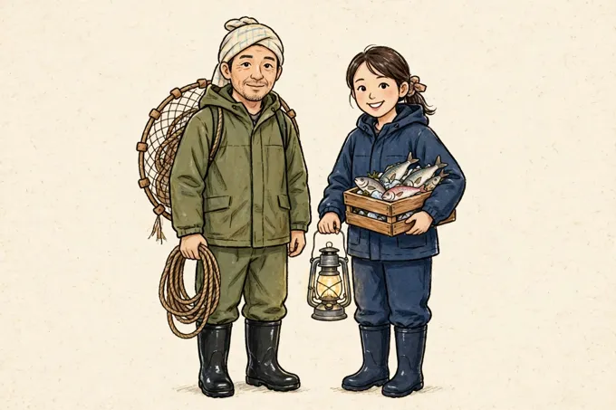
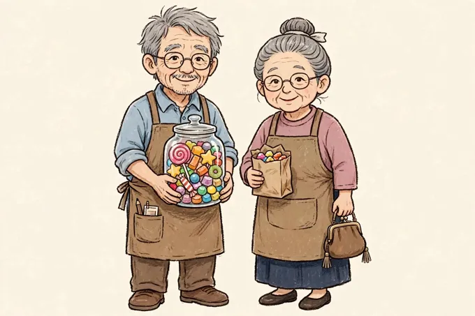
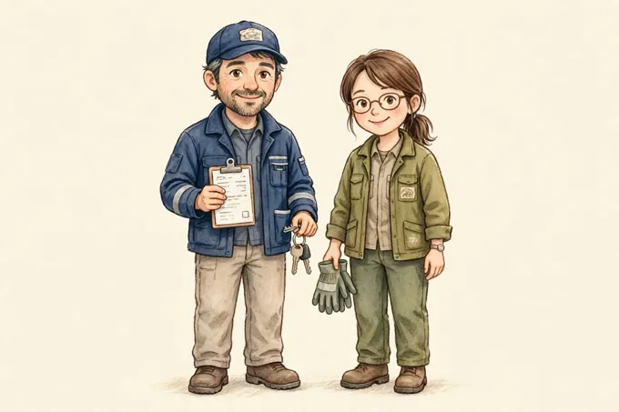

職業ギャラリー
ブラウザゲーム『6駅先の職業』に登場する40の職業を紹介します。各ページでは、その職業の人数（約○人に1人）と、現実のつながりのある職業をたどれます。

漁師
約1,000人に1人

料理人
約60人に1人

ケアマネジャー
約550人に1人
保育士
約180人に1人

大工
約420人に1人

駄菓子屋
約2万人に1軒

農家
約100人に1人
パン屋
約1万2千人に1軒

八百屋
約6,000人に1軒

トラック運転手
約150人に1人
自動車整備士
約380人に1人
看護師
約100人に1人
医者
約360人に1人

薬剤師
約390人に1人

学校の先生
約300人に1人
カメラマン
約2,500人に1人

市役所職員
約80人に1人
警察官
約480人に1人

消防士
約740人に1人
郵便配達員
約620人に1人

不動産屋
約100人に1人

ヘルパー
約60人に1人

歯医者
約1,200人に1人

獣医
約3,100人に1人

司書
約5,600人に1人

電気工事士
約330人に1人

バス運転手
約1,000人に1人
タクシー運転手
約560人に1人
建築士
約330人に1人

美容師
約210人に1人

駅員
約1,200人に1人

花屋
約2,500人に1人

コンビニ店員
約120人に1人
理学療法士
約600人に1人

栄養士
約500人に1人

魚屋
約1万2千人に1軒
パティシエ
約4,000人に1人

歯科衛生士
約800人に1人

社会福祉士
約500人に1人
配管工
約600人に1人
職業の人数は公的統計などの概数です。
運営：TKラボ ／ トップページ（運営者情報・お問い合わせ） ／ プライバシーポリシー